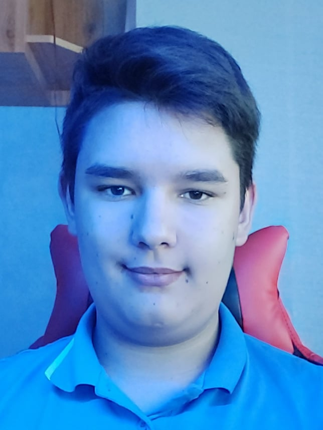

 Hercegfi Csaba vagyok, a BMSZC Neumann János Szakközépiskolában járok 9. osztályba.
Budapesten lakok a szüleimmel a XVI.kerületbe. Békés környék szerencsére.
A napi elfoglaltságom nagyrészt az iskolában tanulás.
Hétvégéimet a családommal szoktam tölteni. Vasas, Barcelona és Ferrári szurkoló vagyok. Minden eggyes mérközést, szanadeddzést, időmérőt és futamot megnézek.
Jelenleg a NEU média és informatikai osztályában próbálkozok, mint 3-mas átlaggal rendelkező diák. Sokan nem ezt várták ettől a tagozattól. Én se, de ennek ellenére megbírkozom a feladattal. A tanárokkal nincs sok problémam. Remélem még sokra tudom vinni azzal a tudással amit itt megtanulok.